The Last of Us Part II começa com Joel contando a Tommy que ele matou os Vaga-lumes para salvar Ellie, porque fazer a vacina significaria a morte da garota. Ele também revela a Tommy que Ellie não sabe o que ele fez.
Joel então visita Ellie e canta e toca para ela, em seguida presentando-a com o violão e dizendo que podem começar as aulas no dia seguinte, como ele havia prometido no primeiro game.
Antes dela sair em patrulha, descobrimos através da esposa de Tommy, Maria, que há alguma tensão entre Ellie e Joel, embora não saibamos ainda o motivo.
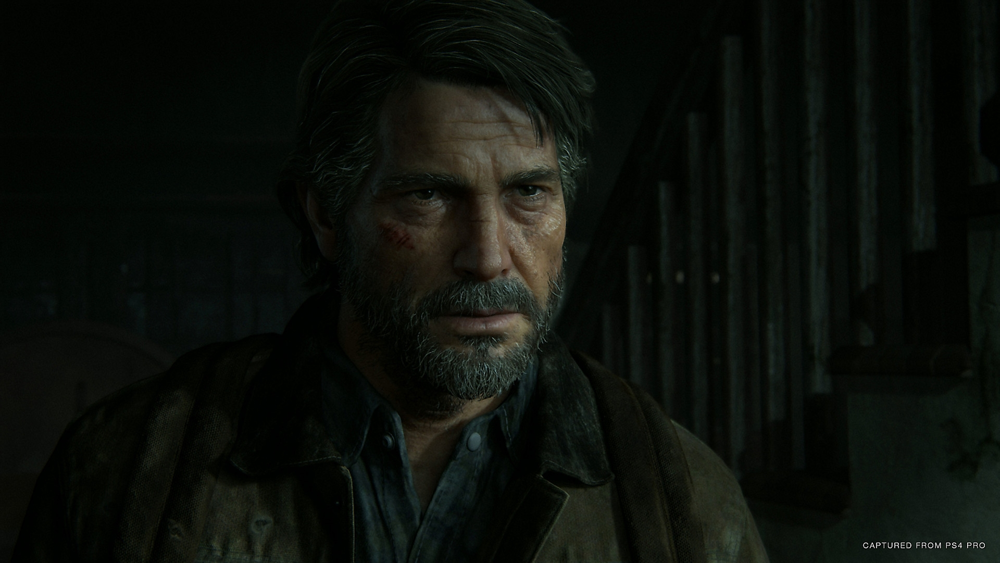Somos então apresentados a uma nova personagem, Abby, que está procurando por alguém em Jackson. Enquanto isso, Ellie e Dina saem sozinhas em patrulha, mas acabam precisando se abrigar em um local devido a uma nevasca. Elas começam a flertar e digamos que o clima entre as duas esquenta.
Então voltamos para Abby. Enquanto é atacada por um infectado, ela é salva por Joel e Tommy, que estavam patrulhando juntos. Eles não tem como fugir de uma horda e voltar para Jackson devido a nevasca, então Abby sugere se abrigarem na cabana onde seus amigos estão.
Voltamos para a perspectiva de Ellie, que são encontradas por Jesse. Ele as avisa que Joel e Tommy não apareceram para a troca de turno, então os três se separam para procurá-los.
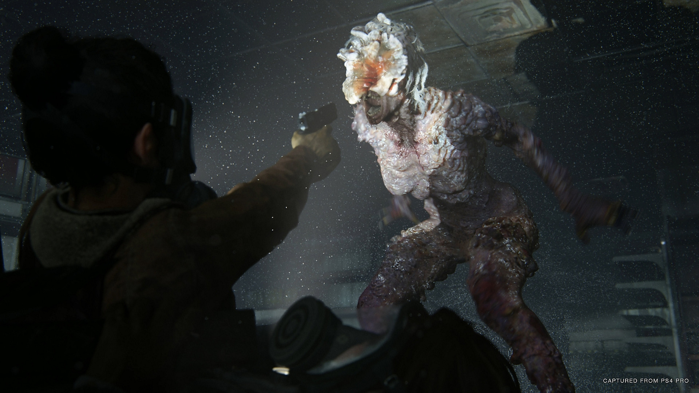Quando Joel, Tommy e Abby chegam até a cabana onde estão os amigos de Abby, ela atira no joelho de Joel com uma espingarda, enquanto os outros nocauteiam Tommy. Abby deixa bem claro que se trata de uma vingança pessoal contra Joel, e começa a espancá-lo com um taco de golfe.
Ellie finalmente chega à cabana onde estão escondidos e tenta atirar em Abby, mas é derrubada e contida, implorando às lágrimas para que Joel se levante e reaja. Ela assiste impotente e desesperada enquanto Abby executa Joel com um golpe final.
Após este traumático evento, Ellie e Tommy tem uma discussão, pois Tommy diz que eles não irão atrás de vingança, porque direcionar pessoal para isso seria o equivalente a deixar Jackson vulnerável. Ellie argumenta que se fosse o contrário, Joel já estaria a meio caminho de Seattle para vingá-lo, porque os assassinos tinham jaquetas da WLF, um grupo atuante da cidade.
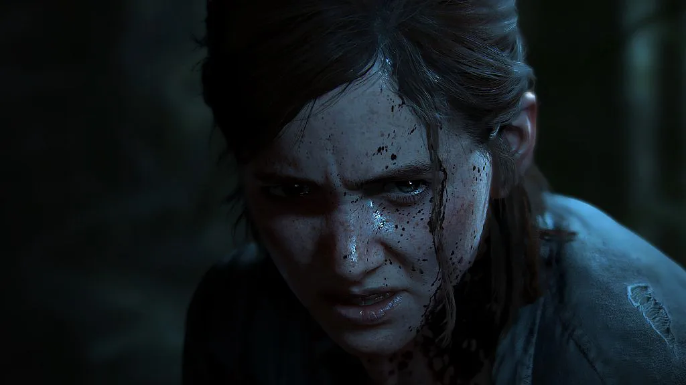Ellie decide ir com Dina atrás de Abby, mas antes disso ela visita o túmulo de Joel e sua casa, onde repassa carinhosamente pelos itens dele, como seu casaco, a foto com Sarah, e o relógio quebrado que foi presente de sua filha.
Maria então vai até Ellie com uma carta de Tommy, onde ele revela que partiu sozinho atrás de vingança, e pedindo para Ellie não vir atrás dele. Relutantemente, Maria dá armas e munição a Ellie e Dina, além de um cavalo, para que elas e encontrem Tommy.
Maria então vai até Ellie com uma carta de Tommy, onde ele revela que partiu sozinho atrás de vingança, e pedindo para Ellie não vir atrás dele. Relutantemente, Maria dá armas e munição a Ellie e Dina, além de um cavalo, para que elas e encontrem Tommy.
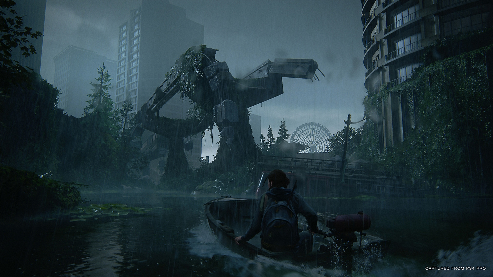Elas continuam cavalgando, até que de repente são emboscadas. Seu cavalo morre e Ellie é capturada, embora felizmente Dina consiga escapar. O captor de Ellie era uma das pessoas envolvidas no assassinato de Joel, e quando iam matar Ellie, Dina aparece atirando neles. Dina acaba sendo atacada pelo membro da WLF, mas Ellie consegue se soltar e salvá-la, matando o inimigo.
Ellie vasculha seus bolsos e encontra uma carta dizendo que Abby e seu grupo estão em uma estação de TV. Enquanto prosseguem, Dina e Ellie são atacadas por infectados em uma área com esporos, e a máscara de Ellie quebra. Dina se desespera e tenta colocar sua própria máscara nela, mas Ellie revela que é imune. Elas são cercadas por uma horda, mas conseguem escapar e fazer uma barricada.
É nesse momento que Dina revela a Ellie que está grávida de Jesse. Ao ouvir isso, Ellie fica com raiva e frustrada, não só pela relação das duas, mas porque se Dina tivesse dito isso antes, não a teria deixado seguir com ela.
Enquanto toca violão para se acalmar, Ellie tem uma lembrança de Joel. Essa lembrança era de um de seus aniversários, onde Joel a levou a uma museu e a fez ter a experiência de entrar em uma nave e ser uma astronauta, seu maior sonho.
Na manhã seguinte, Ellie acorda e descobre que Dina consertou um sinal de rádio, e escutam uma gravação da WLF. Eles falam sobre um homem que invadiu sozinho um de seus esconderijos, e as duas acreditam que seja Tommy. No entanto, quando Ellie sai para ajudá-lo, logo descobrimos que o invasor é Jesse. Eles retornam até Dina, escapando de um ataque da WLF.
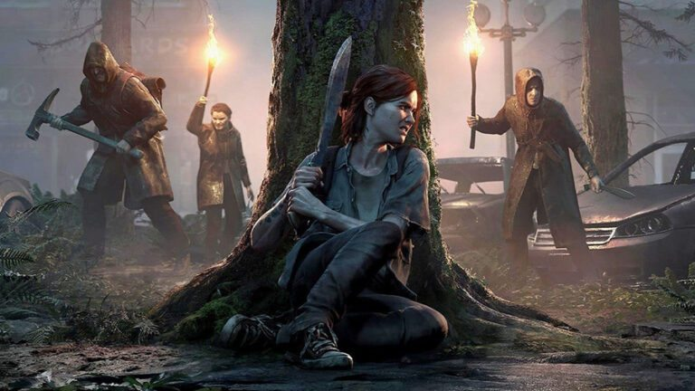Dina avisa a Ellie que ouviu pelo rádio que Nora, uma das pessoas do grupo de Abby, foi designada para um hospital. No caminho para lá, Ellie encontra um grupo de cultistas conhecido como "Serafitas", que está em guerra com a WLF. Ellie consegue passar por eles e finalmente chega ao hospital, onde rende uma soldado com uma faca no pescoço e pergunta por Nora. Ela diz que Nora está nos andares superiores e tenta atacar Ellie, que é obrigada a matá-la.
Ellie encontra Nora no hospital e pede a localização de Abby. Além de não lhe dar a informação, Nora diz que Joel teve o que merecia. Ao tirar o foco de Ellie, Nora a acerta e consegue fugir. Ellie consegue alcançá-la, mas mesmo assim ela se recusa a dizer o paradeiro de Abby. Então Ellie a tortura até conseguir a informação.
Quando Ellie retorna a Jesse e Dina, ela diz ter obtido a informação de que Abby está em uma aquário. Mas ela estava claramente traumatizada com a experiência de ter torturado alguém, em choque e tremendo.
Ellie tem mais uma lembrança envolvendo Joel, dessa vez quando ela descobriu que ele havia mentido a respeito dos Vaga-lumes, a vacina, e a chacina que ele cometeu no final do primeiro game. Ellie fica arrasada com Joel e diz que a relação deles acaba ali.
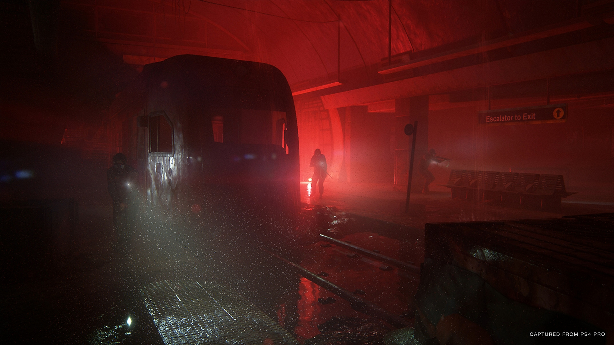Quando Ellie acorda, Jesse pergunta a ela se Dina está grávida, porque ela ainda não havia contado a ele. Ellie confirma, e então ele diz que por mais que queria ajudá-la, eles precisam levar Dina de volta para Jackson. Ellie concorda, mas diz que não vai embora sem Tommy - afinal ele só está lá fora porque Ellie insistiu nessa busca por vingança. Então, Ellie e Jesse partem para encontrar Tommy no Aquário, esperando que ele esteja lá em busca de Abby.
No entanto, eles descobrem que Tommy está em outro lugar, mas Ellie ainda quer ir sozinha ao Aquário para encontrar Abby. Então ela e Jesse seguem caminhos separados. Assim que Ellie chega ao Aquário, ela é atacada por uma cadela, que ela mata sem pensar duas vezes
Ela então encontra duas das pessoas envolvidas na morte de Joel e pergunta por Abby, mas quando reagem, ela acaba matando os dois. No entanto, Ellie fica chocada ao descobrir que a mulher que ela acabou de tirar a vida estava grávida. Enquanto ela está traumatizada, Jesse e Tommy chegam e a levam dali - mas Ellie acaba esquecendo ali o mapa que marca o seu esconderijo.
Na manhã seguinte, Ellie e Jesse ouvem alguns alguns barulhos e correm para ver. Assim que abrem as portas, Jesse leva um tiro no rosto e morre imediatamente. Abby tem Tommy sob a mira de uma arma, então Ellie levanta as mãos e se entrega. E então, o jogo faz uma pausa e nos leva para um flashback.
No flashback de Abby, descobrimos que seu pai era o cirurgião dos vaga-lumes que iria operar Ellie no primeiro game. Vemos uma discussão entre ele e Marlene, a líder dos vaga-lumes, pois ela inicialmente reluta em permitir a cirurgia após saber que Ellie não sobreviveria. Marlene então questiona se ele faria o mesmo se fosse a vida de Abby em jogo. Ele não responde. No entanto, os dois decidem fazer isso de qualquer maneira.
De qualquer maneira, como sabemos desde o game anterior, esse cirurgião é morto por Joel quando ele invade a sala de cirurgia e resgata Ellie. Vemos então uma cena de Abby chegando no local e encontrando seu pai morto, o que a faz entrar em desespero.
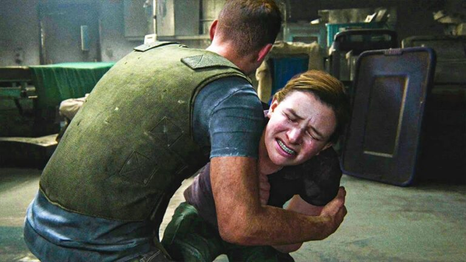Corta para o presente, mais precisamente alguns dias depois da morte de Joel, com Abby descobrindo que seu amigo e ex-namorado Owen saiu da WLF após ter atirado em outro membro. Abby acredita saber onde Owen está, e vai atrás dele no Aquário.
No caminho, ela é capturada e quase enforcada pelos Serafitas, sendo salva por duas crianças, Lev e Yara, que haviam fugido do grupo. Abby os ajuda a chegar até um local seguro, pois Yara estava com um braço gravemente ferido após uma líder dos Serafitas tê-lo esmagado com um martelo.
Abby vai até o Aquário e encontra Owen, que explica que ele e o soldado da WLF no qual ele atirou acabaram discutindo após Owen se recusar a atirar em um Serafita idoso. Os dois brigaram e Owen acabou matando o companheiro em legítima defesa. Abby, Owen e todo o grupo que foi até Jackson matar Joel eram ex-vaga-lumes. Ele diz a Abby ter ouvido um rumor de que os vaga-lumes se reagruparam em Santa Bárbara, e que tentar a sorte com eles, pois está cansado da guerra da WLF.
Na manhã seguinte, Abby se sente culpada por ter deixado Lev e Yara sozinhos em um trailer, e volta até lá para ajudá-los, encontrando o braço de Yara em um estado muito pior. Eles voltam ao Aquário, onde Mel, a enfermeira namorada de Owen, pode cuidar dela. A propósito, Mel estava grávida, esperando um bebê de Owen.
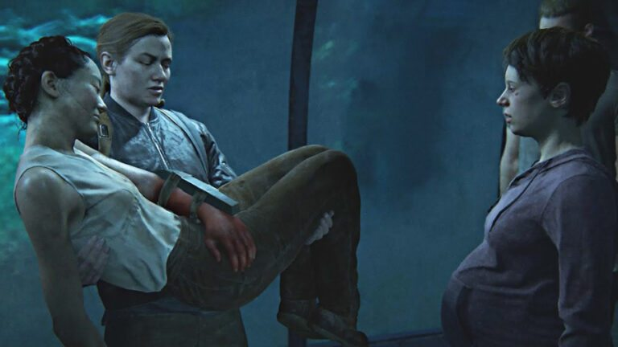Acontece que os ossos do braço de Yara haviam sido esmigalhados, e o braço precisava ser amputado. No entanto, Mel não tinha o equipamento necessário para fazer isso, então Abby vai até o hospital em que Nora estava para pegar esse material. Lá, ela acaba enfrentando uma forma bizarra de infectado, o Rei dos Ratos, mas consegue derrotá-lo e retornar até Yara, que tem o braço amputado e se recupera com sucesso.
Após ela se recuperar, Yara discute com Lev sobre o que fazer a seguir. Yara quer seguir para Santa Bárbara com Owen e Mel, mas Lev quer retornar para a mãe deles. Então Lev foge sozinho, mas Yara diz que ele não será recebido de braços abertos, pois ele desobedeceu a tradição. Acontece que Lev é na verdade um menino trans, cujo nome de nascença é "Lily". De acordo com as leis dos Serafitas, ele teria que se casar com um ancião, mas por se identificar como homem, Lev raspou a cabeça e fugiu.
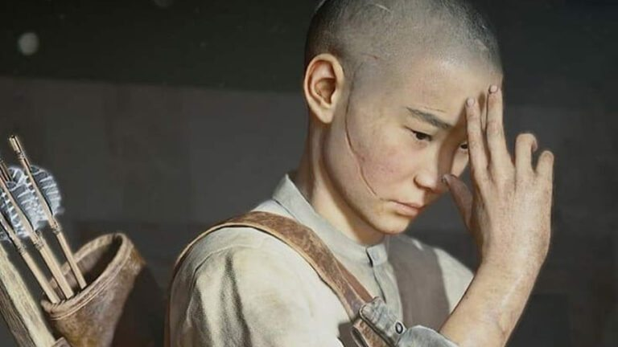Ao tentar encontrar um barco, Abby encontra seu amigo Manny, que também esteve envolvido na morte de Joel. Eles então são alvejados por um sniper, e tentam cercá-lo. No entanto, o atirador sair por outra porta e acerta Manny na cabeça. Abby enfrenta o atirador, que descobrimos então que era Tommy esse tempo todo. Os dois lutam, e ele cai no rio.
Abby e Yara finalmente encontram um barco e chegam até a ilha dos Serafitas. Elas chegam à casa de Yara e Lev e encontram sua mãe morta, com Lev chorando em um canto por ter tirado sua vida em legítima defesa. Ao fugirem da ilha, Yara é morta por um soldado da WLF, no meio de uma enorme batalha entre eles e os Serafitas. De alguma forma, Abby e Lev conseguem escapar da ilha e vão direto ao Aquário
Ao chegarem lá, Abby encontra a cadela Alice, Owen e Mel mortos. Usando o mapa que Ellie deixou cair em estado de choque quando descobriu que Mel estava grávida, Abby e Lev conseguem encontrar seu esconderijo.
De volta ao presente, Abby está prestes a atirar em Ellie, quando Tommy a ataca e acaba levando um tiro na cabeça. Então, uma luta entre Ellie e Abby tem início. Depois de um jogo de gato e rato, Abby espanca Ellie quase até a morte, até que Dina aparece para salvá-la. No entanto, Lev dispara uma flecha em Dina.
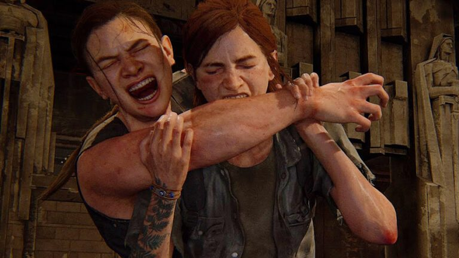Abby então está prestes a matar Dina, quando Ellie implora que não faça isso, pois ela está grávida. Saber disso, e lembrando que Mel também estava grávida, faz Abby ter ainda mais vontade de matar Dina, mas ela decide poupá-la por causa de Lev. Abby deixa Dina e Ellie vivas, mas avisa para Ellie que nunca mais ouse cruzar o seu caminho.
Algum tempo se passa e encontramos Ellie, Dina e o pequeno J.J. vivendo juntos em uma fazenda perto de Jackson. Embora a vida seja razoavelmente feliz, Ellie ainda tem crises de ansiedade e estresse pós-traumático pela morte de Joel.
Um dia, a família recebe a visita de Tommy, que sobreviveu ao tiro à queima-roupa na cabeça, mas perdeu a visão de um olho. Tommy continua obcecado em se vingar de Abby, o que inclusive ocasionou sua separação de Maria. Por também não conseguir mais andar muito bem, ele pede a Ellie para ir atrás de Abby novamente, seguindo uma pista que ele encontrou. Quando ela se recusa, Tommy fica furioso.Nessa noite, mesmo com Dina pedindo que não faça isso, Ellie decide ir atrás de Abby novamente. Enquanto isso, Abby e Lev estão procurando por qualquer vaga-lume restante. Eles finalmente descobrem a localização de um grupo, mas assim que saem pela porta, são atacados e capturados por um grupo de escravagistas conhecidos como "Cascavéis"
No rastro de Abby, Ellie cai em uma armadilha deixada pelos Cascavéis. Ela consegue se livrar deles, pega a informação de onde Abby está e os mata. Ellie finalmente encontra Abby e a força a lutar com ela. Durante a luta, Abby arranca dois dedos de Ellie com uma mordida, e Ellie começa a afogá-la.
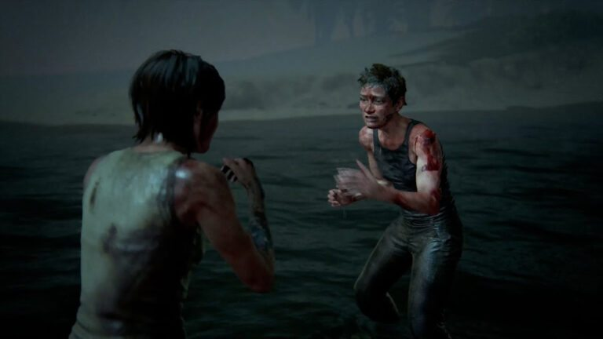Nesse momento, Ellie tem mais uma lembrança de Joel e para. Ela deixa Abby partir com Lev, e fica sozinha. Seu maior medo, revelado ainda no primeiro game. Ficar completamente sozinha.
Quando Ellie volta para a fazenda, a casa está abandonada. Ellie tenta tocar violão, algo que a aproximava de Joel, mas nem isso ela pode mais, pois os dois dedos faltando a impedem. É quando temos o contexto completo da lembrança que fez Ellie deixar de lado o desejo de matar Abby.
Foi uma conversa que eles tiveram na noite anterior à morte de Joel, onde ele diz a Ellie que mesmo que ela esteja chateada, se ele tivesse a chance de voltar no tempo, faria tudo de novo. Ellie então responde que não acha que pode perdoá-lo, mas que gostaria de tentar. Os dois então choram. A cena final é Ellie indo embora. Não fica claro que se ela vai voltar para Jackson atrás de Dina, ou se vai para algum outro lugar.
The Last of Us Part II é uma história sobre vingança. Mas mais do que isso, é sobre como isso gera um ciclo interminável de perdas e traumas. Se Abby não tivesse matado Joel, seus amigos ainda estariam vivos. Se Ellie não fosse atrás de vingança, Jesse não precisaria morrer e Tommy não precisaria ficar ferido e perder seu casamento. É uma história sobre perda, superação e especialmente, sobre se colocar no lugar do outro.
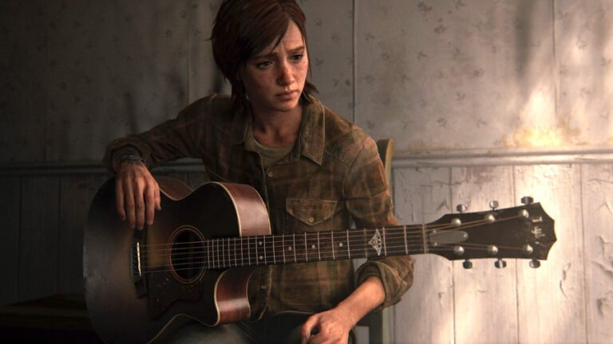